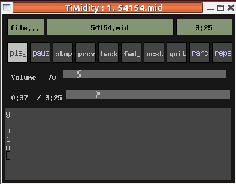

qjackctl
you can link, for example, microphone outputs to
speaker inputs.
This is done by dragging "capture_1" to "playback_1" etc
and appears like

TiMidity is designed as a standalone application with a particular kind of extensibility. Out of the box it can sort-of play Karaoke but not well. This chapter looks at how to work with TiMidity to build a Karaoke system.
Source files in this chapter are here .
TiMidity is a MIDI player, not a Karaoke player. By default it just plays the MIDI music, with the lyrics printed out:
$timidity ../54154.mid
Requested buffer size 32768, fragment size 8192
ALSA pcm 'default' set buffer size 32768, period size 8192 bytes
Playing ../54154.mid
MIDI file: ../54154.mid
Format: 1 Tracks: 1 Divisions: 30
No instrument mapped to tone bank 0, program 92 - this instrument will not be heard
#0001
@@00@12
@Here Comes The Sun
@
@@Beatles
Here comes the sun
doo doo doo doo
Here comes the sun
I said it's alright
Little
darling
But it has
a number of alternative interfaces which give different displays.
If you run
timidity with the -h (help)
option, it will show a screen including something like
Available interfaces (-i, --interface option):
-in ncurses interface
-ie Emacs interface (invoked from `M-x timidity')
-ia XAW interface
-id dumb interface
-ir remote interface
-iA ALSA sequencer interface
.
The default interface is "dumb", but if you run with, say, the XAW
interface you get a display like

There is, however, one unfortunate effect: the lyrics are displayed
before they are due to be played!
To get the lyrics played just as they should be sung,
you need to turn on the
--trace option. From the man page,
"Toggles trace mode. In trace mode, TiMidity++ attempts to
display its current state in real time."
You may find the link between documentation and behaviour
a lttle less than obvious...
timidity --trace ../54154.mid
This now works fine for MIDI files, the lyrics are displayed
when they should be sung. But it doesn't display the lyrics
for .KAR files. For that you need the
--trace-text-meta option:
timidity --trace --trace-text-meta ../54154.kar
So by this stage, TiMidity will display the lyrics on the screen in realtime for Karaoke files (and MIDI files with LYRIC events). To have our own control over this display, we need to build our own TiMidity interface.
In the MIDI chapter on
User space tools
we discussed playing MIDI files using Jack.
Jack is designed to link audio sources and sinks in
arbitrary configurations. By running qjackctl
you can link, for example, microphone outputs to
speaker inputs.
This is done by dragging "capture_1" to "playback_1" etc
and appears like
If TiMidity is then run with Jack output, you get instant
Karaoke. You can also see the lyrics played in real time
using the --trace option:
timidity -Oj --trace 54154.mid
The connections are shown in qjackctl as

The lyric display is klunky, and will be improved later.
You will need to have the TiMidity source downloaded from SourceForge TiMidity++ .
In the earlier chapter on MIDI and TiMidity we discussed two alternative ways of building applications using TiMidity:
Both options are possible here, with one wrinkle: if we want to capture MIDI events then we have to do so as a back-end to TiMidity, which requires that we build a TiMidity interface.
To recap on this,
the different interface files for TiMidity are stored in the
directory interface and include files such as
dumb_c.c for the dumb interface. They all revolve
around a data structure ControlMode
defined in timidity/controls.h:
typedef struct {
char *id_name, id_character;
char *id_short_name;
int verbosity, trace_playing, opened;
int32 flags;
int (*open)(int using_stdin, int using_stdout);
void (*close)(void);
int (*pass_playing_list)(int number_of_files, char *list_of_files[]);
int (*read)(int32 *valp);
int (*write)(char *buf, int32 size);
int (*cmsg)(int type, int verbosity_level, char *fmt, ...);
void (*event)(CtlEvent *ev); /* Control events */
} ControlMode;
.
For the simplest values of the functions in this structure,
see the code for the dumb interface in
interface/dumb_c.c.
For dealing with lyrics, the main field to set is the
function event(). This will be passed a
pointer to a CtlEvent which is
defined in timidity/controls.h:
typedef struct _CtlEvent {
int type; /* See above */
ptr_size_t v1, v2, v3, v4;/* Event value */
} CtlEvent;
The type field distinguishes a large number of event types
such as CTLE_NOW_LOADING and CTLE_PITCH_BEND.
The type of interest to us is CTLE_LYRIC.
interface/dumb_c.c
which prints event information to output:
static void ctl_event(CtlEvent *e)
{
switch(e->type) {
case CTLE_LYRIC:
ctl_lyric((int)e->v1);
break;
}
}
static void ctl_lyric(int lyricid)
{
char *lyric;
lyric = event2string(lyricid);
if(lyric != NULL)
{
if(lyric[0] == ME_KARAOKE_LYRIC)
{
if(lyric[1] == '/' || lyric[1] == '\\')
{
fprintf(outfp, "\n%s", lyric + 2);
fflush(outfp);
}
else if(lyric[1] == '@')
{
if(lyric[2] == 'L')
fprintf(outfp, "\nLanguage: %s\n", lyric + 3);
else if(lyric[2] == 'T')
fprintf(outfp, "Title: %s\n", lyric + 3);
else
fprintf(outfp, "%s\n", lyric + 1);
}
else
{
fputs(lyric + 1, outfp);
fflush(outfp);
}
}
else
{
if(lyric[0] == ME_CHORUS_TEXT || lyric[0] == ME_INSERT_TEXT)
fprintf(outfp, "\r");
fputs(lyric + 1, outfp);
fflush(outfp);
}
}
}
The failing of the current interfaces in TiMidity with regard to Karaoke is that while they can show the lyrics as they are played, they don't show the lyric lines and progressively highlight them as they are played. For that, you need the set of lyrics.
TiMidity in fact builds a list of lyrics, and makes them accessible.
It has a function event2string() which
takes an integer parameter from one upwards. For each value
it returns the string of a lyric or text event, finally
returning NULL on the end of the list.
The first character returned is a type parameter, the rest is
the string. Using GLib functions, we can build up an array
of lines for a KAR file by
struct _lyric_t {
gchar *lyric;
long tick; // not used here
};
typedef struct _lyric_t lyric_t;
struct _lyric_lines_t {
char *language;
char *title;
char *performer;
GArray *lines; // array of GString *
};
typedef struct _lyric_lines_t lyric_lines_t;
GArray *lyrics;
lyric_lines_t lyric_lines;
static void build_lyric_lines() {
int n;
lyric_t *plyric;
GString *line = g_string_new("");
GArray *lines = g_array_sized_new(FALSE, FALSE, sizeof(GString *), 64);
lyric_lines.title = NULL;
n = 1;
char *evt_str;
while ((evt_str = event2string(n++)) != NULL) {
gchar *lyric = evt_str+1;
if ((strlen(lyric) >= 2) && (lyric[0] == '@') && (lyric[1] == 'L')) {
lyric_lines.language = lyric + 2;
continue;
}
if ((strlen(lyric) >= 2) && (lyric[0] == '@') && (lyric[1] == 'T')) {
if (lyric_lines.title == NULL) {
lyric_lines.title = lyric + 2;
} else {
lyric_lines.performer = lyric + 2;
}
continue;
}
if (lyric[0] == '@') {
// some other stuff like @KMIDI KARAOKE FILE
continue;
}
if ((lyric[0] == '/') || (lyric[0] == '\\')) {
// start of a new line
// add to lines
g_array_append_val(lines, line);
line = g_string_new(lyric + 1);
} else {
line = g_string_append(line, lyric);
}
}
lyric_lines.lines = lines;
printf("Title is %s, performer is %s, language is %s\n",
lyric_lines.title, lyric_lines.performer, lyric_lines.language);
for (n = 0; n < lines->len; n++) {
printf("Line is %s\n", g_array_index(lines, GString *, n)->str);
}
}
The function build_lyric_lines() should be called
from the CTLE_LOADING_DONE branch of
ctl_event().
If we choose to use TiMidity as front-end then we need to run it
with suitable options. These include turning tracing on and also dynamically loading our new interface. This can be done for example by
timidity -d. -iv --trace --trace-text-meta ...
for a "v" interface in the current directory.
The alternative is building a
main program that calls TiMidity as a library. The command
line parameters to TiMidity then have to be included as hard-coded
parameters in the application.
One is easy: the CtlMode has a field
trace_playing and setting that to one turns tracing on.
Including Text events as Lyric events requires digging a bit deeper
into TiMidity, but just requires (shortly after initialising
the library)
extern int opt_trace_text_meta_event;
opt_trace_text_meta_event = 1;
I want to be able to play my Karaoke files on the Raspberry Pi and similar Systems on a Chip (SOCs). Unfortuanately the rapsberry Pi has a grossly underpowered CPU, so I have ended up using a CubieBoard 2.
Even then I don't know how to program the GPU, so anything involving heavy graphics is not possible on this CPU. Any of the MIDI players hit close to (or over) 100% CPU usage just be themselves. So the system discussed in the next section, showing background video, isn't feasible.
In this section we use TiMidity as MIDI player with a minimal backend to display
the lyrics as they are played. The lowest level of GUI support is used, namely
Xlib. This can be used to draw text using low-level Xlib calls such as
XDrawImageString. This wrks fine with ASCII languages, and with
appropriate font choices, with other languages in the ISO-8859 family.
Asian languages are harder to deal with in standard C. They involve one or two byte characters when using an encoding such as UTF-8. To manage these. it is easiest to switch to a library designed to handle them such, such as Cairo.
Cairo is good for drawing simple text. For e.g. Chinese characters you have to find a font that will allow you to draw them. Alternatively, you can jump up one further level to Pango. Pango looks after all the font issues and produces glyphs which are sent to the X server.
that approach is adopted in the following interface, x_code.c
it is compiled by
gcc -fPIC $(CFLAGS) -c -o x_code.o x_code.c $(LIBS)
gcc -shared -o if_x.so x_code.o $(LIBS)
and run by
timidity -d. -ix --trace --trace-text-meta ...
In the chapter on FluidSynth case: we discussed a program to show lyrics overlaid onto a movie. Apart from the above considerations, the rest of the application follows similarly to the FluidSynth case: build a set of lyric lines, display them using Pango over Gtk Pixbufs, and when a new lyric event occurs update the corresponding colours in the lyric line.
All of the dynamic action needs to occur out of the back-end of TiMidity.
particularly in the function ctl_event.
Other parts such as initialising FFMpeg and Gtk must also occur
in the back-end when using standard TiMidity. If TiMidity is used
as a library, this initialisation could occur in the front or the
back. For simplicity, we just place it all in the back in
the file video_code.c:
The code for this follows the same structure as the code
in the MIDI TiMidity
chapter. It is is in the file
gtkkaraoke_player_video_pango.:
The interface needs to be built as a shared library by
if_video.so: video_code.c
gcc -fPIC $(CFLAGS) -c -o video_code.o video_code.c $(LIBS)
gcc -shared -o if_video.so video_code.o $(LIBS)
TiMidity is then run with options
timidity -d. -iv --trace --trace-text-meta
As before, it crashes TiMidity from the Ubuntu distro but works fine with TiMidity built from source in the current Linux environment.
At this stage we have a single application which can play a MIDI file, play a background movie and display highlighted lyrics on top of the video. There is no microphone input to sing along.
Singing along can be handled either within this application or by an external process. if we want to include it in the current application then we will have to build a mixer for two audio streams. Java does this in the JavaSound package, but in C we would need to do that ourselves. Now I think that can be done in ALSA, but at present their mixer code is gobbledygook to me.
Jack makes it easy to mix audio - from different processes. The earlier section showed how to do that.
My long term goal is to include scoring, etc. I need to split out the GUI code into a process that can also deal with microphone input. The Gtk interface in TiMidity is a "separate process" model, so I'll build on that - when I have Jack under control.
This section is a place-holder for now.
This chapter has shown how to use TiMidity as MIDI player for a Karaoke system. On my laptop it uses less than 60% of CPU with Gtk 3.0, better than the 100% of FluidSynth.